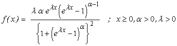

![[logisticexponential_ex0]](logisticexponential_ex0.bmp) Logistic-Exponential Model
Logistic-Exponential Model

model
{
for( i in 1 : N )
{
x[i] ~ dlogistic.exp(alpha, lambda)
}
# Prior distributions of the model parameters
alpha ~ dunif(0.0, 10.0)
lambda~ dunif(0, 2.0)
}
The data set given here arose in tests on endurance of deep groove ball bearings.The data are the number of million revolutions before failure for each of the 23 ball bearings in the life test. The data are taken from Lawless(2003, pp. 99 ).
The MLE’s are alpha = 2.366 ; lambda = 0 .01059
Lan, Y. and Leemis, L. M. (2008). : The Log-Exponential Distribution. Naval Research Logistics , 55 , 252-264.
Lawless, J.F. (2003). Statistical Models and Methods for Lifetime data , Second edition, John Wiley & Sons, New York.
Data ( click to open )
Inits for chain 1 Inits for chain 2 ( click to open )
Results
![[logisticexponential_ex2]](logisticexponential_ex2.bmp)
![[logisticexponential_ex4]](logisticexponential_ex4.bmp)